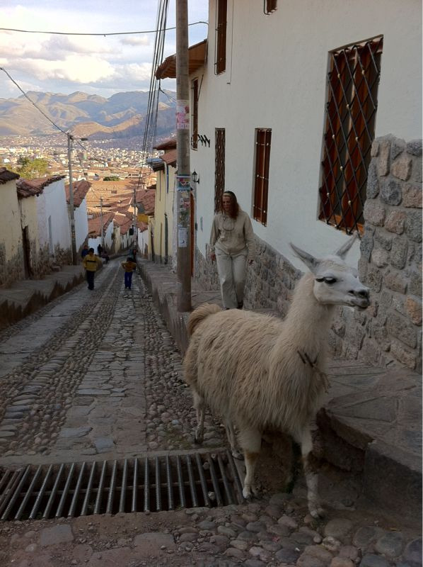

Thu, 14 Oct 2010 06:27:17 · Peru · Cusco · Llama · travel · city · photography.
a llama walking up the hill in the winding alleys

A Llama walking up the hill in the winding alleys of Cusco toward Saqsaywaman.
Thu, 14 Oct 2010 06:27:17 · Peru · Cusco · Llama · travel · city · photography.

A Llama walking up the hill in the winding alleys of Cusco toward Saqsaywaman.